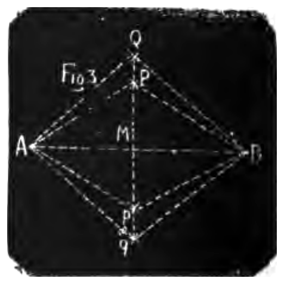

§§ 6–14: Compass Notation & Symmetry Lemmas¶
f. 0041 · p. 126. Thus then we shall reach the end of this treatise, so that no
f. 0042 · p. 13element may be lacking whereby, with the compass alone, all those points of any Problem whatsoever may be determined which until now were wont to be determined with the circle and straightedge.
7. Nevertheless we shall not set down all these Problems here; rather, having demonstrated the elements necessary and sufficient for all, we shall choose among them a good number of the principal ones, that is, all those that seem to us the most useful or noteworthy for a certain elegance.
8. We shall add here in favor of craftsmen—for whose sake in great part this work was written—that knowing the trouble and danger of error that arises from opening and closing the compass to various exact apertures, we shall endeavor to solve Problems with the smallest possible number of compass openings. It will also be even better for the craftsman to have at hand as many faithful compasses, as they are called—that is, such as one can be sure preserve precisely the given opening—as there are openings required by the solution of the Problem. Since it will often happen that we must use the same opening several times after having used one or more others, thus without opening or closing a single compass, we shall pick up again that other compass set aside which preserves it. To this end we shall sometimes call by the name of first, second, third compass the successive openings with which the Problem will be solved.
9. Being moreover important for practical precision in the position of a point that the intersection of the lines which determine it be made at right angles or near a right angle, we shall always arrange that one arc cuts the other either at right angles, if this succeeds, or at least at angles not far from a right angle.
10. To be briefer, without however becoming obscure, in indicating the constructions of figures we shall often employ certain abbreviations, which will be immediately understood merely by looking at the figure. For example in fig. 2, instead of saying: with radius \(AB\), and with center \(B\) describe an arc cutting the circumference \(BCD\) at point \(C\). Then with the same radius, and with center \(C\) describe an arc cutting the same circumference at \(D\) etc.; we shall say only: let \(AB = BC = CD\), etc. be made. For it is clear enough that the points \(B, C, D\) by which the same circumference
f. 0043 · p. 14\(BCD\) is designated lie upon it; so that there is no danger of ambiguity.
11. Likewise, given for example three intervals \(AB\), \(CD\), \(EF\); if I say: let \(CD = EG\), and \(AB = FG\) be made; it must be understood that I mean: with radius \(CD\), and with center \(E\) describe a circle, on whose circumference let point \(G\) lie. Then with interval \(AB\), and with center \(F\) describe another circle cutting the first at point \(G\).
12. Sometimes in demonstrations we shall name certain straight lines that will not be in the figure, naming the two endpoints to which they ought to be drawn; as if in the figure of § 11 I should name the straight line \(AB\), or \(CD\). This we shall do when there will be no danger of obscurity, in order to keep the figure clear and let the construction made with the circle alone appear better.
13. Lemma. If with the two centers \(A\) and \(B\), and with radii \(AP\) and \(AQ\), arcs are described which cut each other at \(P\) and \(p\); \(Q\) and \(q\); the points \(Q, P, p, q\) will lie on the same straight line (fig. 3).


Dem. Since by construction all the sides of the triangles \(APp\), \(BPp\) are respectively equal to one another, angle \(APp\) will be equal to angle \(BPp\) (I.8). By the same reasoning \(APQ = BPQ\) is proved. Therefore the sum of the two angles \(APp\), \(APQ\) is equal to the sum of the two \(BPp\), \(BPQ\). But the sum of these four angles is equal to four right angles (I.13, Coroll.). Therefore each of the two equal sums equals two right angles. Hence \(QPp\) is a straight line (I.14). In the same manner \(Ppq\) is proved to be a straight line. Therefore the points \(Q, P, p, q\) lie on the same straight line.
14. The same things remaining as in § 13, the straight lines \(AB\), \(Pp\), and likewise \(AB\),
f. 0044 · p. 15\(Qq\) will bisect each other equally at \(M\) at right angles, and \(QP\), \(qp\) will be equal.
Dem. Since by the equality of the sides of the two triangles \(APB\), \(ApB\) we have angle \(PAB = pAB\) (I.8). But we also have \(APp = ApP\) (I.5). Therefore also \(AMP = AMp\) (I.32, Cor.). Therefore both are right angles (I.13). And \(Pp\) will be bisected at \(M\) by the demonstration of Prop. 10, Book I. In the same manner it will be shown that \(Qq\) and \(AB\) are bisected at \(M\). Then from the equals \(QM\) and \(qM\) taking away the equals \(PM\), \(pM\), the remainders \(QP\), \(qp\) will be equal.